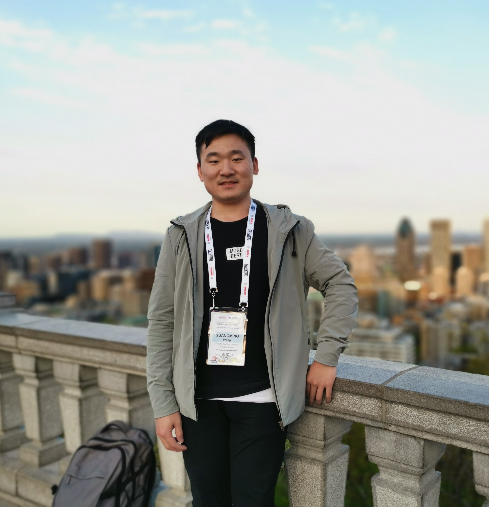
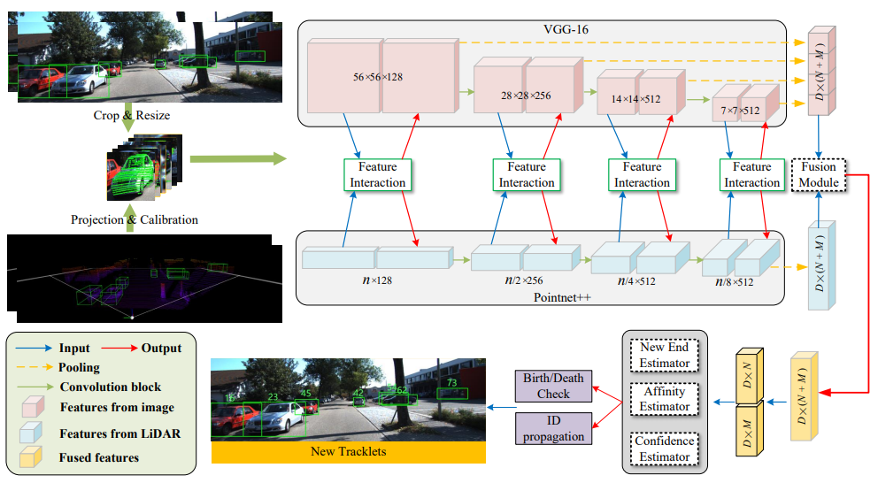

|
I am a Ph.D. student (2018.09-) in the Intelligent Robotics and Machine Vision (IRMV) Lab at the Shanghai Jiao Tong University advised by Prof. Hesheng Wang. I obtained my B.Eng. degree (2014.09-2018.06) from the Central South University, where I was in the Physics Sublimation Honor Class. From 2021.09, I remotely work with Prof. Masayoshi Tomizuka from UC Berkeley. Currently, I am a visiting researcher in the Computer Vision and Geometry Group (CVG), ETH Zurich, advised by Prof. Marc Pollefeys. |
 |
|
My research interests include computer vision for autonomous robots and robot learning, specifically on topics as:
|
[2022.12.08] Got Shanghai Jiao Tong University "Academic Star" Nomination Award (Top 0.2%)! / News: (Shanghai Jiao Tong University, School of Electronic Information and Electrical Engineering)[2022.11.19] One co-first-author paper on the learning of LiDAR odometry with Transformer is accepted by top conference AAAI 2023! [2022.10.11] One co-first-author paper for the unsupervised learning of depth and pose is accepted by top journal TCSVT 2022 (IF=5.859)! [2022.09.26] Got National Scholarships for Doctoral Students again (Top 2%)! [2022.09.13] One co-first-author paper for the efficient 3D deep LiDAR odometry is accepted by top journal TPAMI 2022 (IF=24.314)! [2022.08.23] One co-first-author paper for the robot manipulator learning is accepted by top journal TNNLS 2022 (IF=14.255)! [2022.07.03] One co-first-author paper for the 3D scene flow estimation is accepted by top conference ECCV 2022! [2022.06.23] Join Computer Vision and Geometry Group (CVG), ETH Zurich as a visiting researcher! [2022.06.09] One co-first-author paper for unsupervised learning of optical flow estimation is accepted by top journal T-ITS 2022 (IF=9.551)! [2022.06.07] One co-first-author paper for 3D human pose estimation is accepted by TCSD 2022 (IF=4.546)! [2022.02.01] One co-first-author paper for online calibration of camera and LiDAR is accepted by top conference ICRA 2022! [2021.11.18] One first-authored paper for 3D scene flow is accepted by Advanced Intelligent Systems 2021 (AIS, IF=7.298)！ [2021.10.27] One first-authored paper for 3D semantic segmentation is accepted by T-cybe 2021 (IF=19.118)！ [2021.09.24] Got National Scholarships for Doctoral Students (Top 2%)! / News: (Department of Automation, School of Electronic Information and Electrical Engineering) [2021.08.09] One first-authored paper for 3D action recognition and 3D semantic segmentation is accepted by TIM 2021 (IF=5.332)！ [2021.05.18] One co-first-author paper for 3D scene flow is accepted by top journal TIP 2021 (IF=11.041)! [2021.03.01] One co-first-author paper for 3D LiDAR odometry is accepted by top conference CVPR 2021! [2021.03.01] One co-first-author paper for 3D scene flow is accepted by top conference ICRA 2021! |
 |
We introduce a method of learning challenging sparse-reward tasks utilizing existing controllers. Compared to previous works of learning from demonstrations, our method improves sample efficiency by orders of magnitude and can learn online in a safe manner. |
 |
We propose a new efficient 3D point cloud learning method, which is specially designed for the frame-by-frame processing task of real-time perception and localization of robots. It can accelerate the deep LiDAR odometry of our previous CVPR to real-time, while improving the accuracy. |
 |
We introduce a novel flow embedding layer with all-to-all mechanism and reverse verification mechanism. Besides, we investigate and compare several design choices in key components of the 3D scene flow network and achieve SOTA performance. |
 |
We introduce a novel 3D point cloud learning model for deep LiDAR odometry, named PWCLO-Net, using hierarchical embedding mask optimization. It outperforms all recent learning-based methods and outperforms the geometry-based approach, LOAM with mapping optimization, on most sequences of the KITTI odometry dataset. |
 |
We propose an efficient feature fusion framework with projection awareness for 3D Object Detection. |
 |
We propose an interactive feature fusion between multi-scale features of images and point clouds. Besides, we explore the effectiveness of pre-training on each single modality and fine-tuning on the fusion-based model. |
 |
We propose a new joint learning method for 3D object detection and 3D multi-object tracking based on 3D scene flow. |
 |
We propose a novel context-aware set conv layer to cope with repetitive patterns in the learning of 3D scene flow. We also propose an explicit residual flow learning structure in the residual flow refinement layer to cope with long-distance movement. |
 |
We propose a novel unsupervised training framework of depth and pose with 3D hierarchical refinement and augmentation using explicit 3D geometry. |
 |
We propose Fusion-Net, an online and end-to-end solution that can automatically detect and correct the the extrinsic calibration matrix between LiDAR and a monocular RGB camera without any specially designed targets or environments. |
 |
We utilize the generative adversarial networks (GAN) to self-learn 3D scene flow without ground truth. |
 |
We present a framework to realize the unsupervised learning of scene flow from monocular camera. |
 |
We introduce an Anchor-based Spatial-Temporal Attention Convolution operation (ASTAConv) to process dynamic 3D point cloud sequences. It makes better use of the structured information within the local region, and learn spatial-temporal embedding features from dynamic 3D point cloud sequences. |
 |
We introduce a novel hierarchical neural network with double attention for learning the correlation of point features in adjacent frames and refining scene flow from coarse to fine layer by layer. It has a new more-for-less hierarchical architecture. The proposed network achieves the state-of-the-art performance of 3D scene flow estimation on the FlyingThings3D and KITTI Scene Flow 2015 datasets. |
 |
We introduce a novel unsupervised learning method of optical flow by considering the constraints in non-occlusion regions with geometry analysis. |
 |
We introduce a novel unsupervised learning method of 3D human pose by considering the loop constraints from real/virtual bones and the joint motion constraints in consecutive frames. |
 |
We introduce a spherical interpolated convolution operator to replace the traditional grid-shaped 3D convolution operator. It improves the accuracy and reduces the parameters of the network. |
 |
We propose a method to explicitly handle occlusion, propose the less-than-mean mask, the maximum normalization, and the consistency of depth-pose and optical flow in the occlusion regions. |
 |
We propose a new unsupervised learning method of depth and ego-motion using multiple masks to handle the occlusion problem. |
[2022.10] Conference Talk on “What Matters for 3D Scene Flow Network,” at ECCV 2022 in Tel Aviv, Israel, October 23-27, 2022. [2021.06] Conference Talk on “FusionNet: Coarse-to-Fine Extrinsic Calibration Network of LiDAR and Camera with Hierarchical Point-pixel Fusion” at ICRA 2022 in May 23-27, 2022 (Online Talk, the conference is held in Philadelphia (PA), USA). [2021.06] Conference Talk on “PWCLO-Net: Deep LiDAR Odometry in 3D Point Clouds Using Hierarchical Embedding Mask Optimization” at CVPR 2021 in CVPR Virtual, June 19-25, 2021. [2021.05] Conference Talk on “Unsupervised Learning of Scene Flow from Monocular Camera” at ICRA 2021 in Xi’an, China, May 30 - June 5, 2021. [2020.10] Invited Talk on “Unsupervised Learning of Depth, Optical Flow and Pose with Occlusion From 3D Geometry” at the First International Forum on 3D Optical Sensing and Applications (iFOSA 2020) held in Being, China, October 17-18, 2020. [2019.07] Seminar Talk on “Unsupervised Learning of Monocular Depth and Ego-Motion Using Multiple Masks” at Sino-European Engineering Education Platform (SEEEP) Doctoral Summer School in Instituto Superior Técnico (IST), Lisbon, Portugal, July 22-25, 2019. [2019.05] Conference Talk on “Unsupervised Learning of Monocular Depth and Ego-Motion Using Multiple Masks” at ICRA 2019 in Montreal, Canada, May 20-24, 2019. [2019 - present] Reviewer: IEEE Conference on Computer Vision and Pattern Recognition (CVPR), IEEE International Conference on Computer Vision (ICCV), European Conference on Computer Vision (ECCV), IEEE Robotics and Automation Letters (RAL), International Conference on Robotics and Automation (ICRA), International Conference on Intelligent Robots and Systems (IROS), European Conference on Mobile Robots (ECMR), International Journal of Computer Vision (IJCV), IEEE Transactions on Image Processing (T-IP), IEEE Transactions on Intelligent Transportation Systems (T-ITS), IEEE Transactions on Cybernetics (T-cyb), IEEE Transactions on Automation Science and Engineering (T-ASE), IEEE Transactions on Industrial Informatics (T-II), Neurocomputing, International Journal of Humanoid Robotics (IJHR), Geo-spatial Information Science (GIS), International Journal of Social Robotics (IJSR). |
Nov. 2019 - Jun. 2020: Direct four undergraduate graduation projects of SJTU, one of which was submitted to ICRA 2021. (The Shanghai Jiao Tong University, SJTU). Jul. 2020 - Aug. 2020: Direct seven junior undergraduates in summer laboratory practice. (The Shanghai Jiao Tong University, SJTU). Mar. 2020 - Mar. 2021: Directing four undergraduate innovation projects, two of which were approved by the Shanghai Innovation Training Program for College Students. Some students of them cooperated with me to submit a TIP paper, a T-IM paper, a T-Cyb paper. (The Shanghai Jiao Tong University, SJTU). Nov. 2020 - Jun. 2021: Direct two undergraduate graduation projects of SJTU, one of which submitted a CVPR paper. Sep. 2020 - present: Direct three masters and a doctor in China University of Mining and Technology, because my advisor is an adjunct professor there. One of them submitted an T-II paper. One of them submitted an IJCAI2022 paper. (The China University of Mining and Technology, CUMT). Mar. 2021 - Mar. 2022: Directing five undergraduate innovation projects. Some students of them cooperated with me to submit a RAL paper, two ICRA papers. (The Shanghai Jiao Tong University, SJTU). Nov. 2021 - present: Directing three undergraduate innovation projects. Some students of them cooperated with me to submit a T-NNLS paper. (The Shanghai Jiao Tong University, SJTU). Nov. 2021 - Jun. 2022: Direct ten undergraduate graduation projects of SJTU. (The Shanghai Jiao Tong University, SJTU). Nov. 2021 - present: Direct one more master in China University of Mining and Technology, because my advisor is an adjunct professor there. (The Shanghai Jiao Tong University, SJTU). Mar. 2022 - present: Directing four undergraduate innovation projects. (co-supervised with Ph.D. student Tianchen Deng.) (The Shanghai Jiao Tong University, SJTU). Mar. 2022 - present: Directing three PhD students of our laboratory and six masters who are about to enter the laboratories of China University of Mining and Technology. (The China University of Mining and Technology, CUMT). Oct. 2022 - present: Leader deep learning group with 23 graduate students, including 6 PhD students, 14 master students, 2 accepted PhD students, and 1 accepted master student, in IRMV lab in SJTU. (The Shanghai Jiao Tong University, SJTU). |
Doctor:
Masters:
Undergrad Interns:
Past Masters:
Past Undergrad Interns:
|
|
In my free time, I like reading books on psychology and literature. I like traveling. I also enjoy sports and meditate. |
Last update: 2022.07. Thanks for Jon Barron's and Bo Yang's websites. |